The method in pictures
The 2000 presentation used fifteen explanatory drawings. figures/diagrams.jl generates an English counterpart for each, plus one overview image. They are new drawings, produced by code, explaining the same ideas — not copies of the originals.
julia --project=. figures/diagrams.jl # SVGs into figures/out/This page is the visual walkthrough of Algorithms; the last section shows the same ideas in real numbers. All result plots are in the gallery.
Setup and boundaries
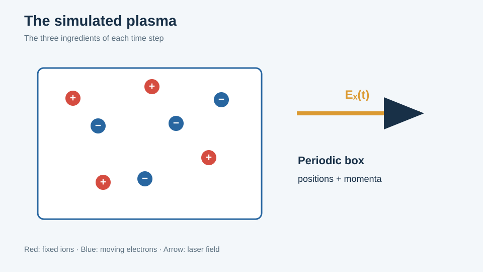
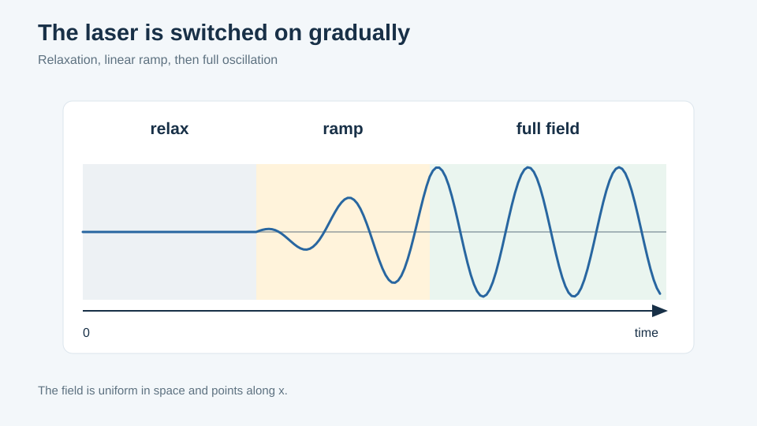
The envelope: n_relax periods with the field off, n_increase periods of linear ramp, full amplitude thereafter.
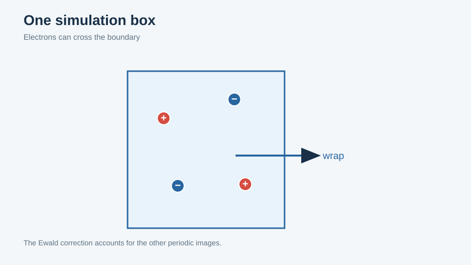
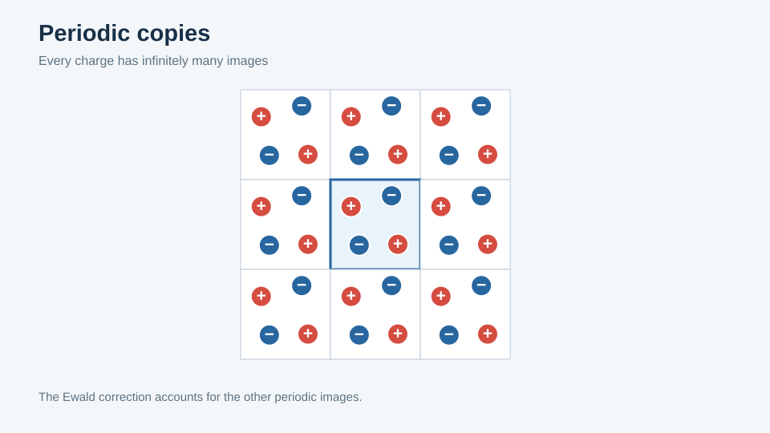
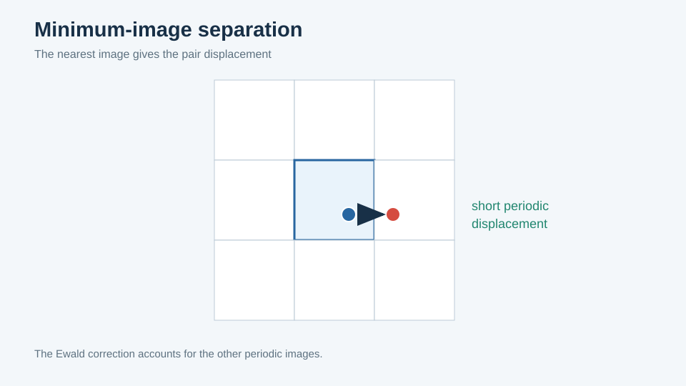
The third of these is the one with a practical consequence: it is why trajectories in the gallery are crossed by long straight segments no particle traversed.
Ewald
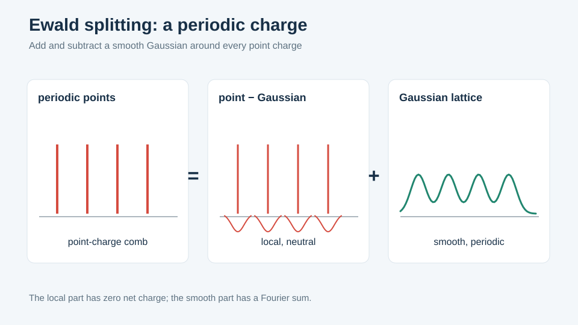
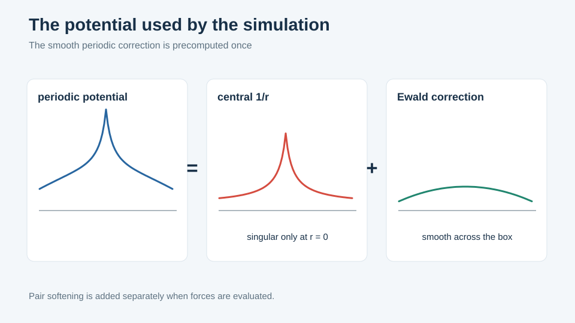
The second drawing shows the split this code's table actually stores: the periodic potential minus the central term. The 1/r is supplied separately, which is what keeps the softening lengths independent of the table.
Barnes–Hut
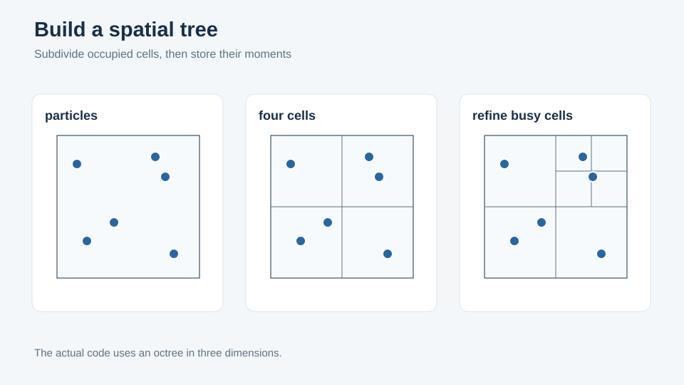
Recursive octant subdivision of occupied cells.
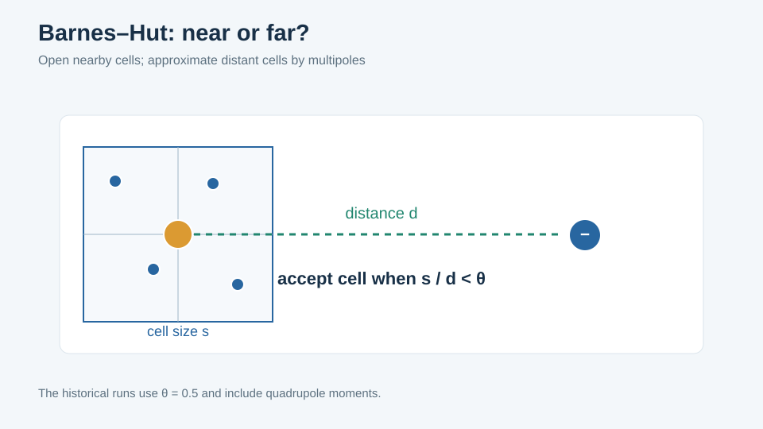
The opening test: accept a cell's multipole summary, or open it and repeat on its eight children. theta sets the threshold.
Individual steps — the problem
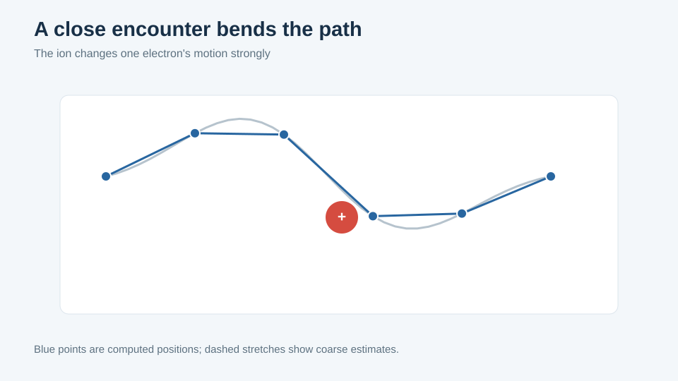
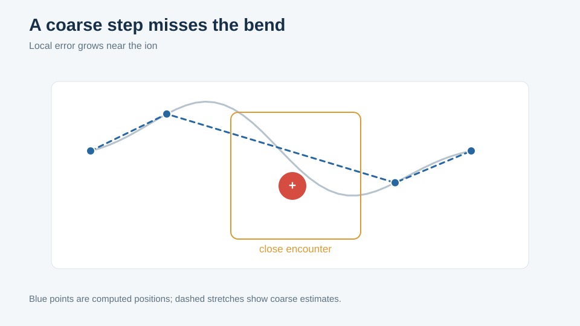
An affordable uniform step cuts the corner of the encounter.
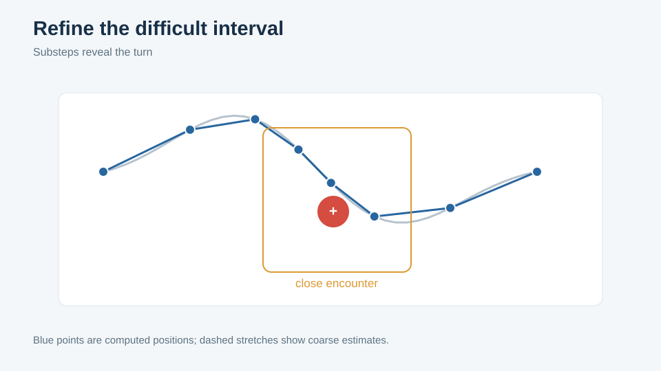
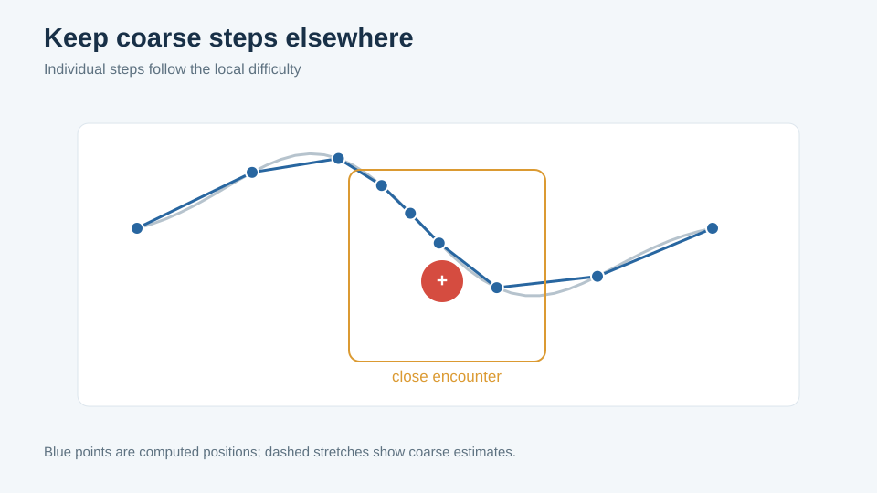
The target distribution of effort: dense through the encounter, sparse elsewhere — which is almost everywhere, for almost every particle.
Individual steps — the mechanism
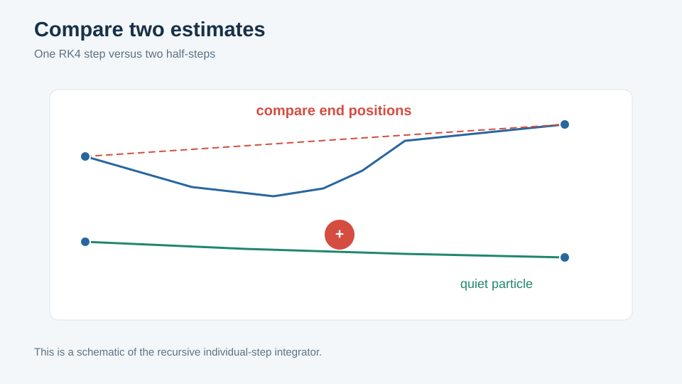
Step doubling: one step of length h against two of h/2.
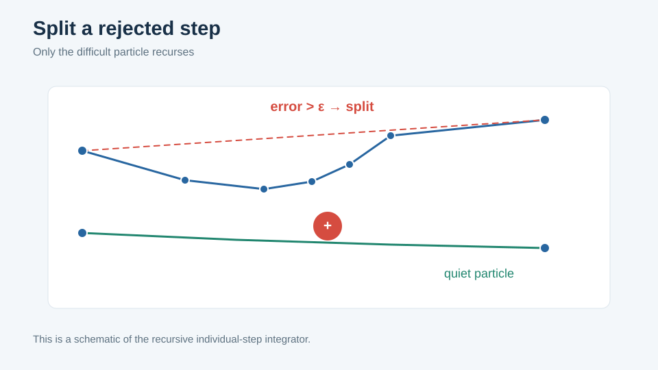
The comparison is made per particle. Failures are passed to the two half-intervals and the procedure recurses.
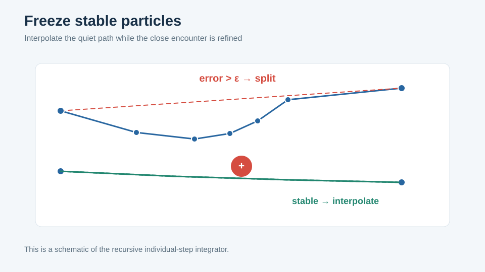
Particles that pass are frozen for the rest of the interval and supplied to deeper levels by quadratic interpolation through the three RK4 nodes already computed. This is where the saving actually comes from: they stop being integrated at all.
The same thing in real numbers
method3d
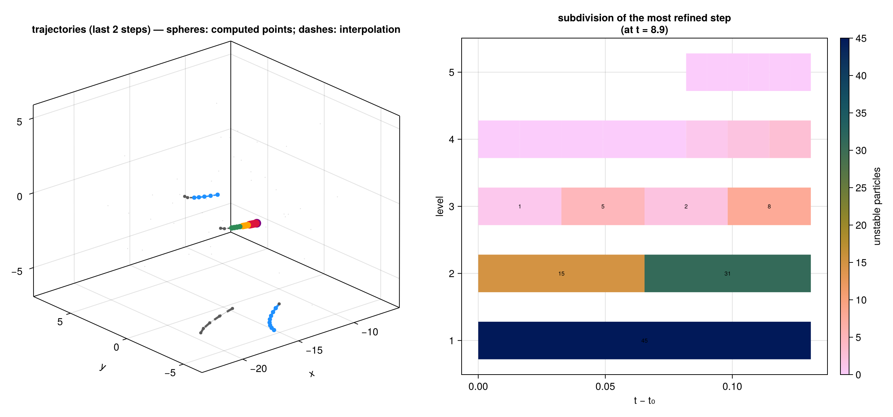
Generated by a short Julia run (figures/method3d.jl), and the most direct evidence that the scheme behaves as described.
Left: electron paths over the last two outer steps. Spheres are genuinely computed points; dashes are stretches supplied by interpolation after the particle was frozen.
Right: the recursion for one outer step as a timeline. Each band is a level, width is time across the step, and the number in each block is how many particles were still unstable there. Reading upward: 45 at level 1; 15 and 31 in the two halves at level 2; 1, 5, 2, 8 at level 3; and by level 5 only a sliver of the interval is still subdividing. That collapse is the algorithm's entire economic case. PDF
indiv and indiv2
Archived 2000 data, redrawn by figures/indiv.jl — not schematics.
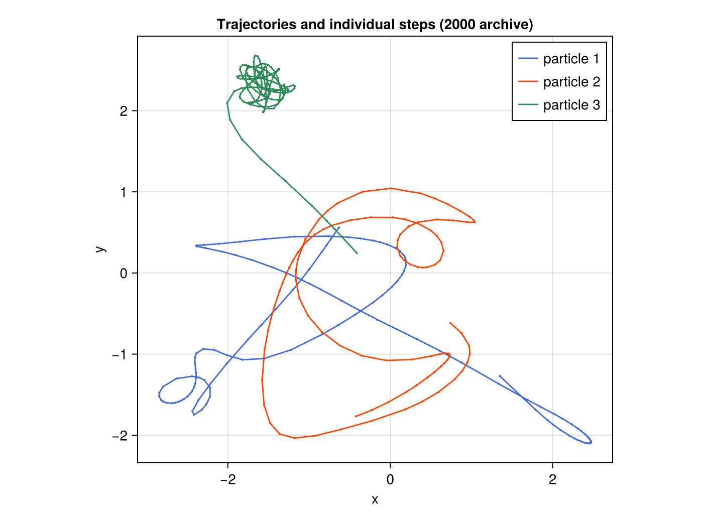
Three electron paths with a dot at every computed point. Along the open sweeps the dots are widely spaced; in the trapped tangle at the top they are dense enough that the path reads as solid. PDF
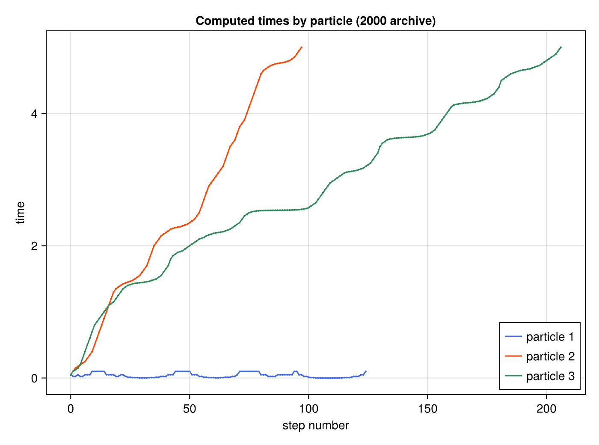
The same fact as accounting, and the most informative plot of the set: computed steps on the horizontal axis against simulated time reached on the vertical. A particle taking large steps climbs steeply; one under heavy refinement stays flat. The blue curve spends about 125 computed steps advancing simulated time by essentially nothing, while other particles cross the same interval in a handful. PDF